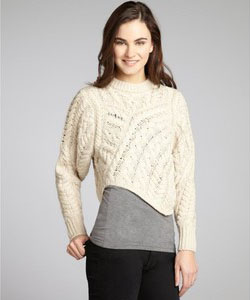

Scarves

Warm yourself with this women's natural cable knit scarf, crafted from 100% Merino wool. Imported.

Faribault brings you the Ashby Twill Scarf in Natural. Woven with a 'broken' twill technique, the Ashby Twill Scarf has a slight zigzag texture. Made in USA, this timeless scarf is crafted with luxurious merino wool and finished with heather gray fringe. 100% Merino wool

A dip-dye effect adds color and dimension to a cozy infinity scarf featuring a soft, chunky knit. 100% acrylic.